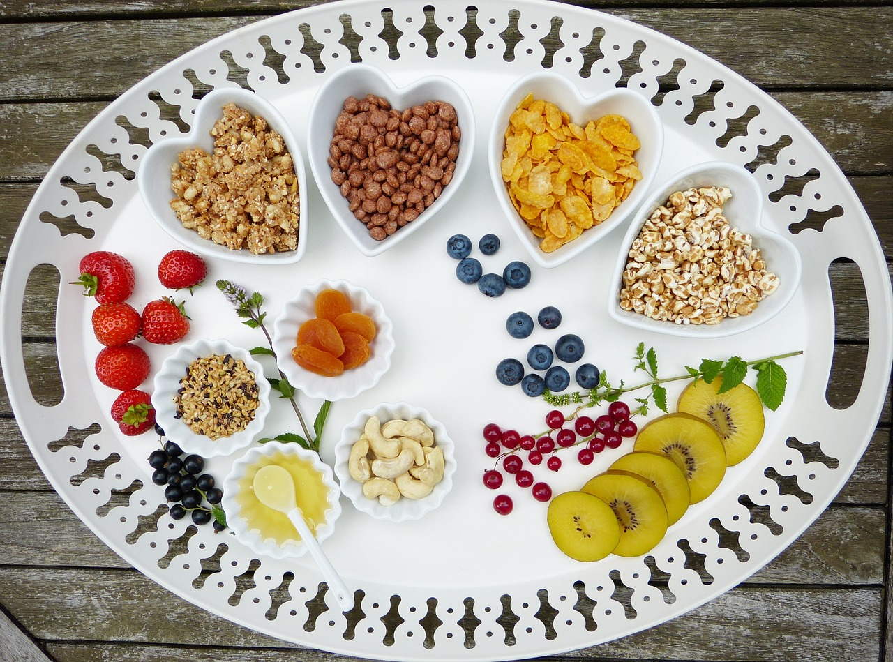
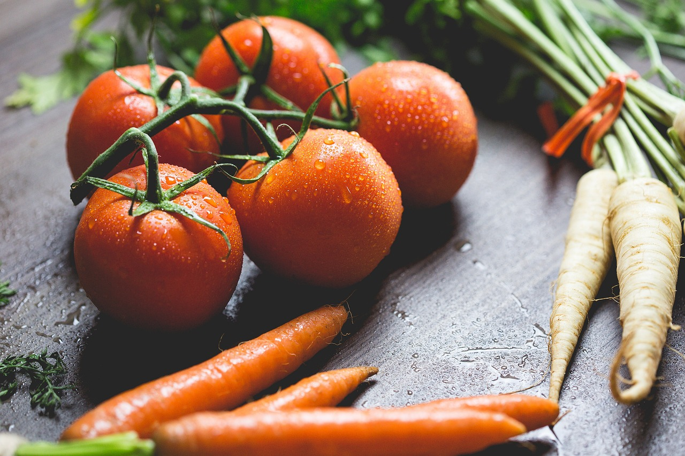
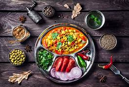

Consejos Culinarios
Consejos Culinarios
- Utiliza siempre cuchillos afilados para evitar accidentes y mejorar la precisión.
- Deja que la carne repose después de cocinarla para que retenga sus jugos.
- Precalienta tu sartén antes de agregar ingredientes para evitar que se peguen.
- Prueba los alimentos a lo largo de la cocción para ajustar la sazón.
- Utiliza aceite de oliva extra virgen para aderezos, y aceite regular para cocinar.
- La sal debe añadirse en diferentes etapas del cocinado para desarrollar mejor el sabor.
- Mantén organizadas tus herramientas de cocina para mejorar la eficiencia.
- La mantequilla clarificada es ideal para freír debido a su alto punto de humo.
- Cocina la pasta en agua con abundante sal para realzar su sabor.
- Usa hierbas frescas al final de la cocción para mantener su sabor vibrante.
- Cocina las verduras al vapor para preservar sus nutrientes y color.
- Marina la carne durante al menos 30 minutos para intensificar su sabor.
- Desglasa la sartén con vino o caldo para hacer una sabrosa salsa.
- Mantén tus tablas de cortar separadas para carne cruda y vegetales para evitar la contaminación cruzada.
- Las ollas de hierro fundido retienen el calor de manera uniforme, ideales para guisos.
- El vinagre blanco es excelente para limpiar y desinfectar superficies en la cocina.
- Cuando hornees, mide tus ingredientes con precisión para obtener mejores resultados.
- El papel pergamino evita que los pasteles y galletas se peguen a la bandeja.
- Conserva las hierbas frescas envolviéndolas en una toalla húmeda en el refrigerador.
- Siempre prueba tu comida antes de servirla para asegurarte de que esté bien sazonada.
¿Sabías qué...
...la comida puede influir significativamente en tu salud y bienestar?

Comida Saludable

Técnicas de Cocina

Ingredientes Frescos
